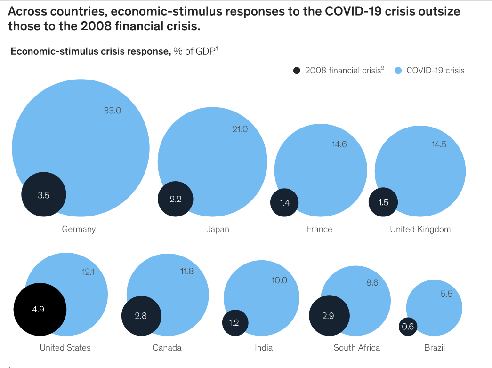

He asked me to jot down "a few points about what the govt/RBA need to think about coming out of this recession. That can include anything you'd like to consider, including JobKeeper/JobSeeker". You can see the result in his piece published today which, is mostly based off the phone conversation we had after I sent my e-mailed response.
In any event, for the record, here the the notes I sent back on receiving his first email – I've slightly edited them to improve readability.
A few quick thoughts and then happy to chat.
-
-
- Err on the side of doing too much not too little.
- We should run the stimulus as hard as we can without a significant tick-up in inflation. It's not impossible that inflation picks up disappointingly soon because, unusually for a recession, the shock has not just been to demand, but also to supply. But an uptick in inflation is likely to have lower costs than an error on the other side – worse unemployment – lower output and the possibility of ‘scarring’ of more of the workforce than necessary though lengthy absence from the labour force.
- The RBA should probably print money. But I’d much rather see them doing that to monetise stimulus activity that goes directly into economic activity rather than propping up asset prices. It’s much more effective, it’s much more direct, it’s much more efficient and it’s much fairer.
- We should leave the magnitude of any money printing to independent agencies – in particular the RBA – in charge of how much that is. (That’s a problem because they’re very conventional in their thinking and not thinking this way at present.) To do it properly one would also want them to have some independent power to unwind some of that monetisation, but that would involve major institutional and political reform. That could come later if it were necessary in the unlikely event that the political system had the stomach for it.
- We should broaden our idea of what can and should be a stimulus. The last stimulus was delivered with our hard hats on. Partly because the government was nervous that fiscal stimulus looked undisciplined, we wanted to be reassured by the seriousness of the measures and other than the cash splashes, it was mostly buildings, light infrastructure and so on.
- But fixed investment is only about a quarter of investment in our economy – the rest being human capital. That should have been a much larger part of our stimulus last time round (there were some innovative expansions of university research infrastructure funding). Greater stimulus spending on investment in human capital is also much fairer in terms of gender balance. We should look for ways we can employ aids in teaching and health, do more research and intensify training to build the human capital in the economy.
-
I think good advice would be never argue with a Gruen on economics so I won't.
I do find it interesting that the critics of the fiscal stimulus from the Rudd years are nowhere to be seen or heard now.
It could be that they have realised their criticisms were wrong. Some such as Tony Makin writing for the minerals council were downright embarrassing.
however I do think in terms of the Murdoch media it is because the stimulus was undertaken by a Liberal government.
Since all my friends are commenting let me add two reasons why these stimuli mih not succeed where say the Stimuli did with the GFC.
We do not know if the supply chain problems have been overcome. If not it is hard for the private sector to respond.
If most ( oe even a significant minority)of your workforce is working from home then it is problematic about employing more people. Most companies have either a formal or informal induction program.
It is very hard to do this because most employees are not in the office and the problem of just getting to the office.
"I think good advice would be never argue with a Gruen on economics"
As someone who has vociferously but unsuccessfully argued economics with two out of three Gruen economists, I second that advice.
But on topic, I reckon the planning for post-covid economics has to think of opportunities rather than risks. All experience is that any crisis creates those opportunities (which is NOT to say that crises are welcome, just that they have silver linings). Capitalism is the original "what does not kill me makes me stronger" machine.
But of course the instincts of Those Whom it Hath Pleased Almighty God to Put in Authority Over Us will instead be towards renewed caution. I can't See Shane or Nicholas' program getting up.
Fair call
What program of Shane's are you referring to?
As Harry Callaghan once said a man should know his limitations.
I know mine so can I can get you two luminaries to tell all of us whether the fiscal policy post September is contractionary as Ross Gittins asserts or merely less expansionary i.e it is still adding to GDP but less than pre-September
DD Those Whom it Hath Pleased Almighty God to Put in Authority Over Us ,is it an memory aid , an anagram? or what?
I suspect an oblique reference to the Anglucan prayer for the state of Christ's church militant here on earth.
"We beseech thee also to save and defend all Christian Kings, Princes, and Governors; and specially thy servant ELIZABETH our Queen; that under her we may be godly and quietly governed: And grant unto her whole Council, and to all that are put in authority under her, that they may truly and indifferently minister justice, to the punishment of wickedness and vice, and to the maintenance of thy true religion, and virtue."